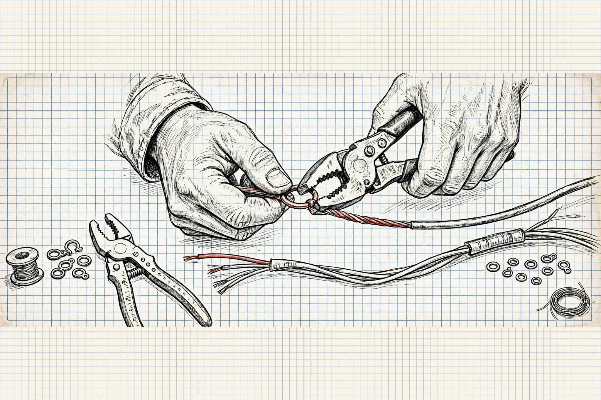
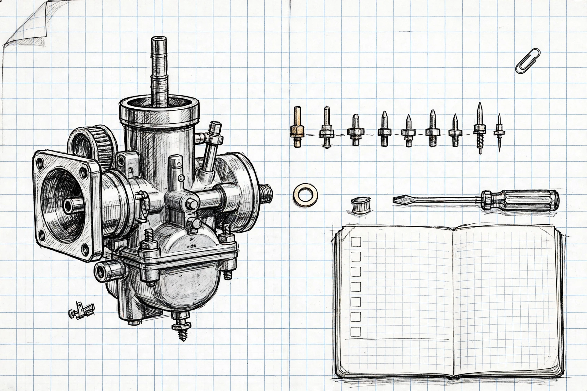
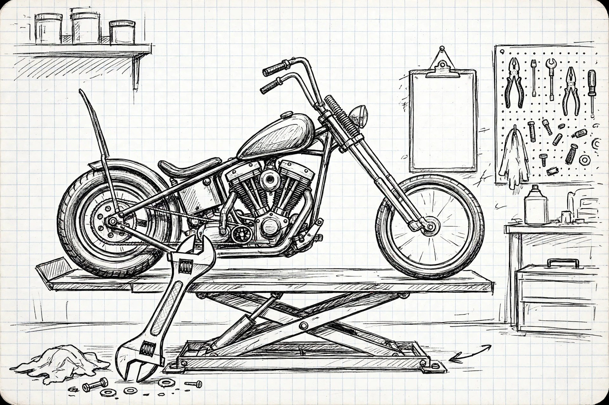
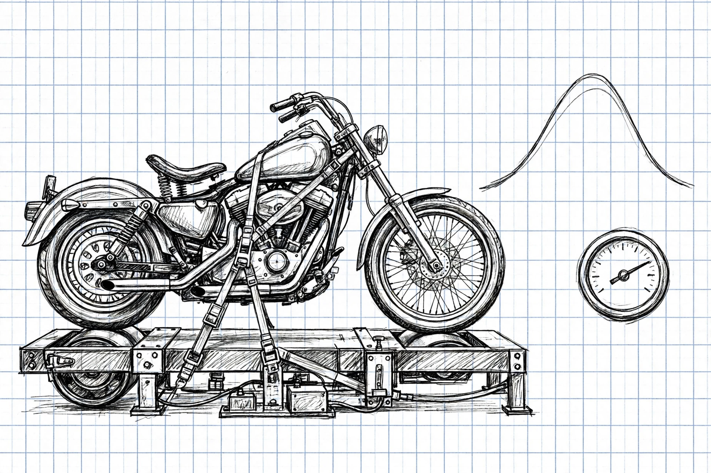

shop notes — one garage, four tools
Popps’s Garage
Everything built in the garage, in one place. Pick a tool and get to work — no accounts, no ads, nothing to install unless you want it on your home screen.

Wiring · Shop sheet Nº 1 Evo Wiring Planner Build a harness you can trace at midnight. Open the planner → Publishing to GitHub — link goes live shortly.
Carbs · Shop sheet Nº 2 Carb Tune Journal The jetting notebook — every pilot, main and needle change, written down. Open the journal →
Service · Shop sheet Nº 3 Bike Maintenance Log The service tracker — oil, brakes, tires, and what’s due next. Open the log →
Dyno · Shop sheet Nº 4 Pocket Garage Dyno The dyno app — runs, curves, and what the motor actually made. Open the dyno →